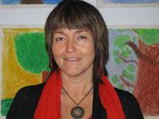

Birgitta Englund

Jag arbetar med bildterapi både i eget företag sedan 1984, och som programansvarig för bildterapeututbildning vid Umeå universitet sedan 1993. Min arbetsterapeututbildning har gett yrkeserfarenhet från både vuxen- och barnpsykiatri där bildskapande alltid varit en viktig aktivitet i behandlingen. Genom åren har jag lett åtskilliga bildterapigrupper, hållit kurser, föreläsningar och introducerande workshops i bildterapi i olika sammanhang.
Bildterapiföreningen i Norrland (BiN) var jag med och startade 1982, liksom Sveriges Riksförbund för Bildterapeuter (SRBt) 2006. Jag har gestaltterapeututbildning samt grundläggande utbildning i psykoterapi. En artikel jag skrivit om bildarbete i kognitiv psykoterapi finns att läsa här.
Jag är också utbildad yoga- och meditationslärare inom traditionen Satyananda Yoga. Bildterapi leder ofta in till existentiella frågor om mening och livsriktning. De bilder som skapas utgör underlag för reflektion omkring självbild och relationer, om tro och grundläggande värderingar. Därför kombinerar jag ofta meditation och bildskapande.
Jag erbjuder
- Individuell bildterapi
- Bildterapi i grupp
- Handledning i bildterapi
- Fortbildningskurser för bildterapeuter
Kontakt: birgitta.mindart@gmail.com
Carin Salander

Bildterapi Umeå
Jag är utbildad specialpedagog och har en fil kand i beteendevetenskap. Jag har i ca 25 år arbetat som specialpedagog inom skilda områden, ex. särskolan, barnpsykiatrin, grundskolan och de senaste åren på Elevhälsan i Umeå. Sedan jag utbildat mig till bildterapeut (Almametoden, 1997 och Umeå Universitet 2001), har jag till stor del arbetat med bildterapi inom mitt yrke. Jag har de senaste 12 åren (2003-2015) arbetat på Elevhälsan i Umeå med bildarbete för barn och unga i svårigheter i syfte att stärka deras självkänsla. Jag har också haft fortbildningskurser och handledning i bildarbete för personal inom elevhälsan/skolan i Umeå. Jag är ej konstnär och har ej tidigare hållit på med måleri, men när jag mötte bildterapi, förstod jag, att det inte är förmågan att måla som har betydelse utan, att leka med färger och former utan krav på prestation, vilket ger en lugnande, meditativ avstressande effekt och en möjlighet att uttrycka/bearbeta känslor, tankar och upplevelser som leder till självkännedom och en jagstärkande utveckling.
Jag erbjuder
- bildterapi individuellt för vuxna
- bildterapi för barn och unga
- själverfarenhetskurs/workshops
- 30-40 tim-kurs för personal inom skola/barnomsorg
- handledning i bildterapi
Kontakt: carin.salander@outlook.com
Telefon: 070-2377681
Gunilla Berglund

Bild för Hälsa
Åren 1971-2010 har jag varit verksam som socialarbetare inom fyra olika områden; kriminalvård, kommunal vuxenutbildning, öppenvård för kvinnor i aktivt missbruk samt på behandlingshem för män och kvinnor med missbruk och psykisk ohälsa. I mitt yrke har jag mött människor i utsatta livssituationer där fokus har legat på stödsamtal, psykosocial rådgivning och krisbearbetning. Jag kompletterade min socionomutbildning med magisterexamen i socialt behandlingsarbete i slutet av nittitalet samt med specialistutbildning i bildterapi vid Umeå Universitet 2001. Jag har sedan dess arbetat med bildterapi individuellt och i grupp kombinerat med psykosocialt behandlingsarbete.
Mitt förhållningssätt i behandlingsarbetet är att aktivt arbeta med ”friskfaktorer”, dvs stärkande och hälsofrämjande insatser, där bildterapi är en sådan. En utbildning till handledare i KASAM (Känsla av Sammanhang) gav en fördjupad kunskap som jag också använder i min roll som bildterapeut. Människor med god förmåga att uppleva tillvaron som begriplig, hanterbar och meningsfull får en känsla av sammanhang, vilket främjar hälsa. Bilden blir ett verktyg som kan bistå målaren i att begripa, hantera och finna meningsfullhet.
Jag erbjuder
- Bildterapi individuellt och i grupp
- Handledning i bildterapi
- Psykosocial rådgivning med samtal och bild
- Workshops med olika teman – se Aktuellt sidan
Kontakt kgunillak@gmail.com
Katarina Sihlén
Jag heter Katarina Sihlén, och är legitimerad psykolog sedan 2003, med erfarenhet av psykologisk behandling, neuropsykiatriska utredningar, individualterapi/bildterapi, föräldrastöd, gruppbehandling, konsultation och handledning. Jag har arbetat inom barn- och mödrahälsovården och numera inom barn- och ungdomspsykiatrin. I kontakten med barn, ungdomar och deras föräldrar, är samtalet grunden, men många minnen, tankar och känslor är svåra att uttrycka enbart med ord. Där jag har funnit att bildterapi kan ge individen möjlighet att visualisera och förmedla det som finns bortom orden.
Mitt intresse för konst, bilder och kreativa uttryck väcktes tidigt.Att arbeta med bildskapande och ge andra möjlighet att uttrycka sina tankar, känslor och erfarenheter genom bilder, har sedan funnits som en röd tråd i mitt yrkesliv. Efter grundläggande konsthantverksutbildning vid Edelviks 1990 folkhögskola och sedan bildlärarexamen vid Umeå Universitet 1993, har jag undervisat i bildämnet inom grundskolan, på gymnasienivå och vid högskolan för lärarutbildning- och kommunikation i Jönköping.
Bildterapiutbildningen har gett mig ett terapeutiskt verktyg, som jag tror på och därför implementerat inom den verksamhet jag verkar inom. Där har jag kunnat se att arbetet med bilder bidragit till ökad självkännedom, kontakt med känslor och erfarenheter, som leder till att en läkande process kommit igång.
Jag erbjuder
- Bildterapi individuellt
- Bildterapi i grupp
- Workshops
Ninne Lindgren
Bildverkstaden
Jag är utbildad specialpedagog och bildterapeut, och har även gått grundläggande hantverks- och konstnärliga utbildningar. Att arbeta med kreativitet och skapande har alltid varit mitt fokus. Under 20 år i skolans värld har jag arbetat med bildskapande tillsammans med barn och unga. Vilket har övertygat mig om bildens unika kvaliteter som redskap i kommunikationen människor emellan, men också i individens kommunikation med sig själv. Parallellt med detta har jag också ägnat mig åt eget skapande, vilket är en stor inspirationskälla. Efter att ha tagit magisterexamen i bildterapi vid Umeå Universitet jobbar jag nu även med bildskapande som ett terapeutiskt verktyg för bearbetning, växande och utveckling med människor i olika åldrar. Genom att arbeta med bildterapi/bildarbete enskilt eller i grupp ges möjlighet att finna sina egna kreativa resurser och självläkande krafter. Jag är yrkesmedlem och f n sekreterare i Svenska Riksförbundet för Bildterapeuter/SRBt. Har utbildning i Mindfulnessbaserat bildarbete (Mbb) våren 2010 under ledning av Birgitta Englund, lärare och programansvarig vid Magisterprogrammet i Bildterapi vid Umeå universitet.
Jag erbjuder
- Enskild bildterapi
- Bildterapi i grupp
- Inspirationsträffar
Kontakt: ninnelindgren@gmail.com
Mobil: 073 - 847 9046
Ulla Kiivuori

De senaste yrkesverksamma åren ca 25 år har jag arbetat med människor med missbruk och beroende. Mina verktyg de sista tio åren har varit i behandlingen och motivationsarbetet, bildterapi och mindfulness baserat bildarbete. Jag är tvåspråkig, flyttade från Helsinki till Stockholm slutet av 60-talet. Skapandet för min egen del sker ofta med akryl eller akvarell.
Konstkunskaperna mina är från Abf-konstskola i Umeå i slutet av 80-talet med konsthistoria på universitetet. Samt många konstkurser med olika konstnärer. Utbildningen i bildterapi gick jag på Umeå Universitet och därefter flera vidareutbildningar inom ämnet bl a "Mindfulness baserat bildarbete" hos Birgitta Englund.
Tillsammans med mig , skaparmaterialen och de olika målar-, och kroppsövningarna, kan du närma dig, stanna upp i det som du vill och behöver just nu. OBS, du behöver inga förkunskaper. Varje person har sitt alldeles egna bildspråk.
Jag erbjuder
- att tillsammans med mig titta på din livstråd
- stöd och ideer till att hitta åter till ditt eget skapande
- ger verktyg till att minska stressen
- öka din egen kraft och bestämmande i livet
Tervetuloa! Välkommen!
Telefon: 0730 55 49 51